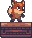

LOADING...

Sunny Land
Sunnyland is a peaceful 2d platformer. Play as a fox and explore multiple levels, collect gems, berries and dodge enimies like frogs and eagles. Join your friends in multiplayer races or speedrun through the main levels against the clock.

SunnyLand's Backstory
SunnyLand began all the way back in mid 2020 as a first trail of game development in unity, following this tutorial LINK. The very first version of SunnyLand (back then named Foxy: A platformer) can be found Here. After moving on to other types of games and game engines I decied to come back to the game and completly re do it. It went from a simple one level game to what it is now.

Who Made SunnyLand?
Foxy: A platformer was intially made by me in 2020 as a way to learn in Unity 2018 during lockdown. I then redisgned it in April 2022 with all the new concepts I had learn like: Multiplayer using photon, AI Pathfinding using A*, Account login and creating using PHP and unity web handler.